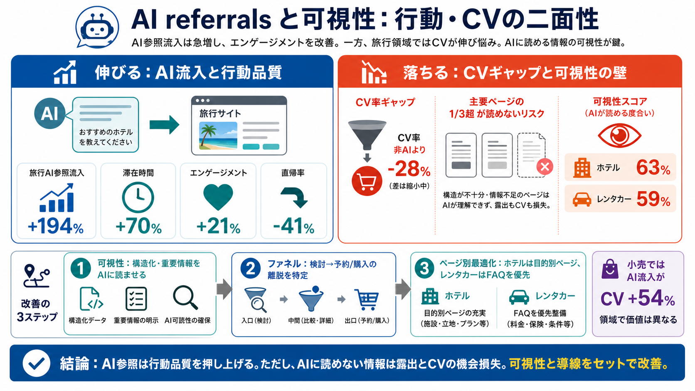

AI travel traffic surges as engagement hits new highs
Traffic from AI sources to U.S. travel sites grew 194% year-over-year (YoY) in May 2026 and is up +2,215% since October …

AIで入口が変わる（AI referrals）
AI経由の旅行流入は急増し、滞在・エンゲージメントは改善する。一方でコンバージョン差は残り、要因は「AIに読めるか」に寄る。
「流入増」だけでは足りない
AI参照が増えるほど、ユーザー行動は良くなるのに、なぜ最後の予約・購入（CV）だけ同等にならないのか。その答えとして「可視性（可読性）」が浮上する。
行動品質が上がる
Adobeの調査では、AI経由の訪問は非AIより行動の質が高い。要するに、AIが連れてくるのは「検討目的が強いユーザー」になりやすい。
でもCVはまだ負ける
AI流入のCV率は非AIより28%低い。ただし2024年10月以降、その差は約70%縮小しており、改善が進んでいる。
AIが読めるか（可視性）
重要なのは「AIがページのコンテンツを読める可視性」。AI Content Visibility Checker（可視性チェッカー）の考え方で、読み取り難い情報は参照前に落ちる。
結論：AI参照の「露出」は、従来SEO以上に“AI可読設計”が前提になりうる。
ホテルは63% / カーリーは59%
旅行サイトの可読性（可視性）には差がある。ホテルのホームページは63%、カーリーレンタルは59%。さらに「3分の1超が読めない」状況も報告される。
※「ゼロ」ではないが、AI側で要約・参照に載らない情報が出る可能性がある。
ページ種別で勝ち筋が違う
同じ旅行でも、ページタイプや情報の形でAI可視性・成果が変わる。ホテルは目的別ページで強く、カーリーレンタルはFAQで強い傾向が示唆される。
単一施策で全体改善を狙うより、「どのページから」直すかが重要になる。
旅行だけではない
小売でもAI参照流入は伸び続ける。米国の小売サイトでは2026年5月に+138%、2024年10月以降の累積で+1,324%。さらにCV面ではAI流入が非AIより54%良い。
実務：検証の優先順位
「AIに読める設計」→「AI参照後の導線最適化」まで分解して検証すると、機会損失を減らせる。
因果は断定できないため、自社データで再現検証が必須。
二面性：伸びるが、落ちる
AI参照は“行動品質”を押し上げる。一方で、AIに読まれない情報があると露出とCVの前段で機会損失になる。可視性と導線をセットで改善せよ。
Traffic from AI sources to U.S. travel sites grew 194% year-over-year (YoY) in May 2026 and is up +2,215% since October …
It found that AI-referred traffic to retail sites grew 138% year over year in May 2026. In addition, AI-referred traffic…
Adobe’s companion shopper survey (5,000+ U.S. respondents) found that 66% of consumers believe AI tools provide accurate…
Overall, Adobe’s data shows that while U.S. retailers have built a good foundation when it comes to AI visibility, there…
Financial Services and Insurance: 17% Retail and Consumer Goods: 17% High Tech: 17% Media and Entertainment: 17…